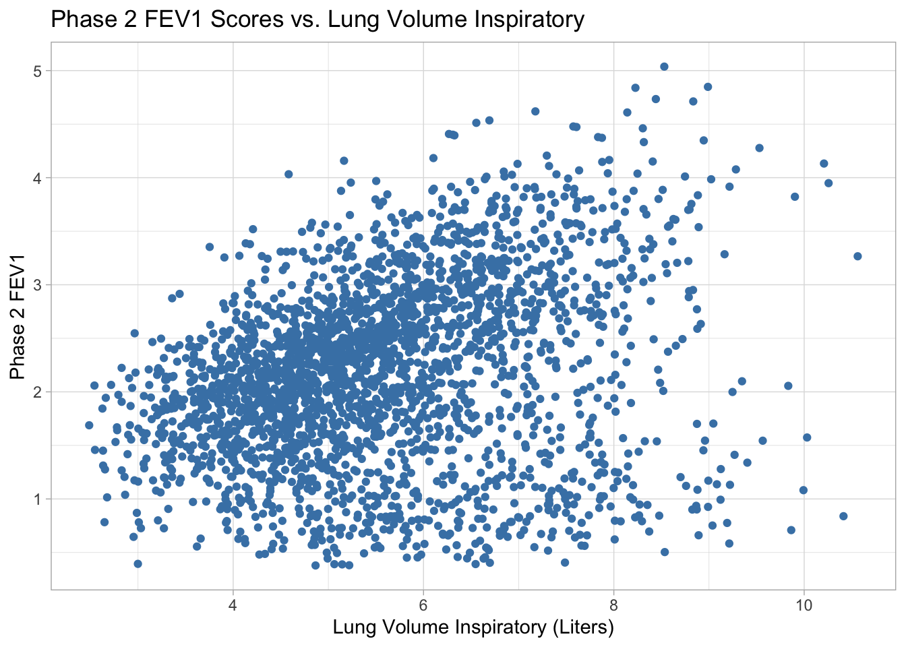
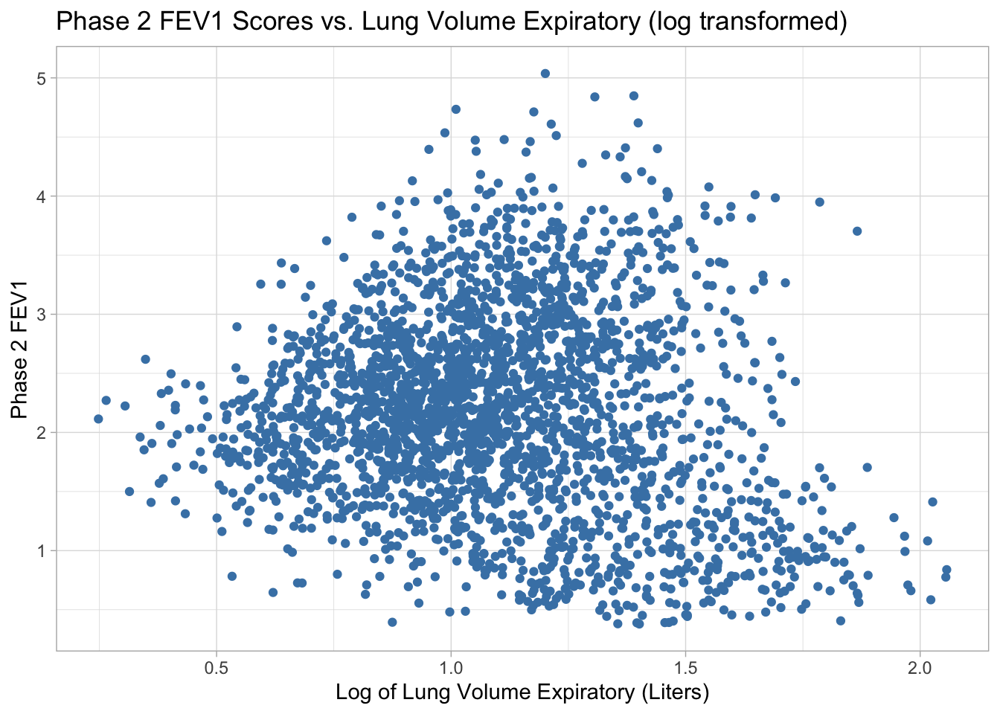
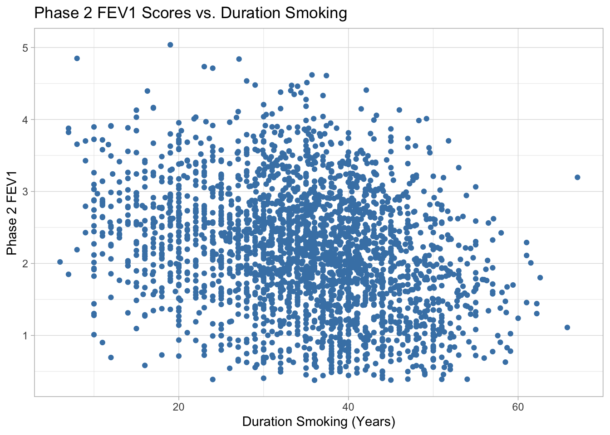
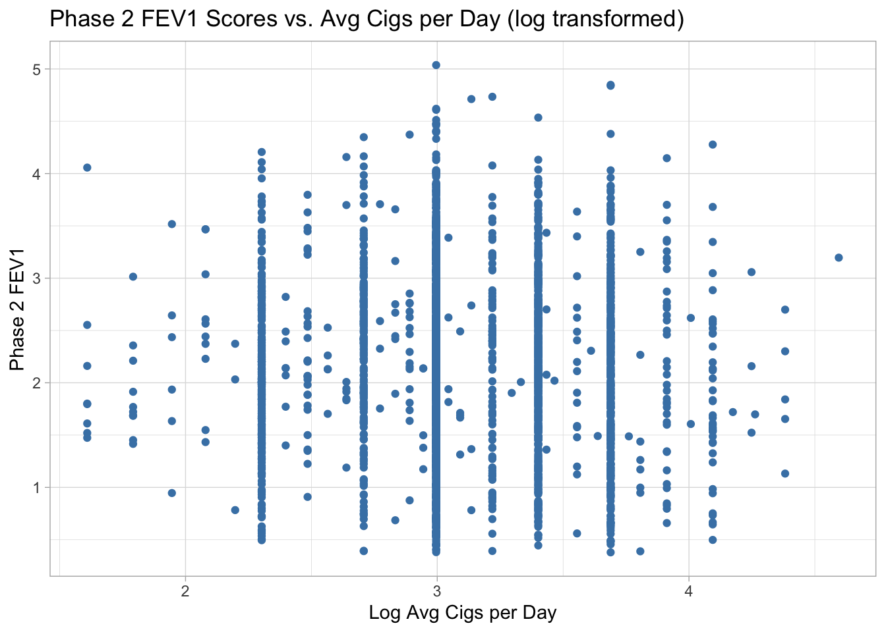
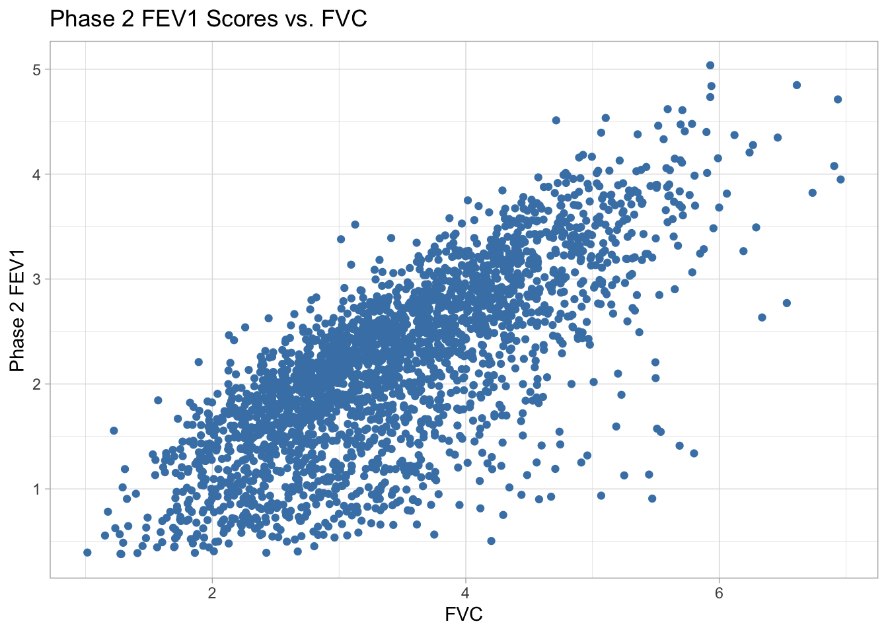

Code
#necessary packages & libraries
library(jsonlite)
library(rvest)
library(ggplot2)Chronic obstructive pulmonary disease (COPD) affects over 16 million Americans and is the fourth leading cause of death in the United States behind heart disease, cancer, and accidental death. While COPD can result from various toxic inhalations or asthma, it is most commonly associated with cigarette smoking.
COPD severity is typically measured by a device called a spirometer. Patients forcefully exhale into the device and the volume of air exhaled is used as a measure for the severity of disease (less air exhaled \(\Rightarrow\) worse disease). Data collected by the COPDGene research group includes spirometry data on thousands of research participants.
Spirometry measures in the dataset:
The forced expiratory volume (FEV1) is the volume of air exhaled in 1 second * The forced vital capacity (FVC) is the total volume of air exhaled after a full breath
FEV1_FVC_ratio is the ratio between FEV1 and FVC (smaller \(\Rightarrow\) worse disease)
FEV1_phase2 is the FEV1 of research participants 5 years later
The overall task in this project is to analyze the relationship between FEV1 at follow-up (FEV1_phase2) and other variables in the dataset. The project has been organized into a series of tasks to assist with analysis organization.
#necessary packages & libraries
library(jsonlite)
library(rvest)
library(ggplot2)Import Data
#import COPD demographics data from CSV file
COPD_demographics <- read.csv("https://raw.githubusercontent.com/khasenst/datasets_teaching/refs/heads/main/copd_data_demographics.csv")
str(COPD_demographics)'data.frame': 2620 obs. of 18 variables:
$ sid : chr "10005Q" "10055F" "10056H" "10060Y" ...
$ visit_year : int 2008 2008 2008 2008 2008 2008 2008 2008 2008 2008 ...
$ visit_date : chr "1/15/2008" "3/15/2008" "2/15/2008" "5/15/2008" ...
$ visit_age : num 54.5 69 48.7 72.8 76.2 70 61.8 69.6 47.8 71.5 ...
$ gender : int 2 1 2 1 2 2 1 2 1 1 ...
$ race : int 1 2 1 1 1 1 1 1 1 1 ...
$ smoking_status : int 2 1 1 1 1 1 1 1 2 1 ...
$ height_cm : num 160 178 154 177 155 ...
$ weight_kg : num 73 90.7 86.2 89.6 55 ...
$ blood_pressure_systolic : int 130 168 100 147 134 92 108 144 139 140 ...
$ blood_pressure_diastolic: int 80 100 53 71 78 58 78 90 90 75 ...
$ heart_rate : int 87 55 98 87 92 77 72 110 87 73 ...
$ hours_on_oxygen : int 0 0 24 24 0 12 0 0 0 24 ...
$ bmi : num 28.6 28.6 36.5 28.6 22.9 ...
$ smoke_start_age : int 14 18 12 17 18 16 13 16 19 13 ...
$ cigs_per_day_avg : int 20 20 40 30 20 40 20 20 20 20 ...
$ duration_smoking : num 40.5 20 36 54 52 48 17 30 28.8 57 ...
$ respiratory : chr "" "hay fever" "asthma|bronchitis attacks|chronic bronchitis|pneumonia|emphysema|copd|sleep apnea" "asthma|bronchitis attacks|chronic bronchitis|emphysema|copd" ...#import COPD medical images data from JSON file
COPD_medical_images <- fromJSON("https://raw.githubusercontent.com/khasenst/datasets_teaching/refs/heads/main/copd_data_imaging.json")
str(COPD_medical_images)'data.frame': 2610 obs. of 7 variables:
$ sid : chr "24838L" "14901M" "11357A" "20152J" ...
$ lung_volume_inspiratory : num 4.2 5.78 5.5 4.94 4.65 ...
$ emphysema_percentage : num 1.37 3.78 4.72 8.42 0.06 ...
$ lung_volume_expiratory : num 2.3 2.99 2.75 3.21 2.98 ...
$ gas_trapping_percentage : num 10.56 11.66 16.92 39.41 2.62 ...
$ mean_density_inspiratory: num -830 -836 -856 -851 -762 ...
$ mean_density_expiratory : num -685 -674 -728 -777 -656 ...#import COPD spirometry data from HTML file
html <- read_html("https://raw.githubusercontent.com/khasenst/datasets_teaching/refs/heads/main/copd_data_spirometry.html")
COPD_spirometry <- as.data.frame(html_table(html)[[1]])
str(COPD_spirometry)'data.frame': 2610 obs. of 5 variables:
$ sid : chr "22035P" "25109H" "10127E" "15450K" ...
$ fev1_fvc_ratio: num 0.62 0.81 0.83 0.51 0.75 0.81 0.31 0.76 0.81 0.82 ...
$ fev1 : num 3.67 1.97 2.32 2.4 3.94 ...
$ fvc : num 5.95 2.43 2.79 4.75 5.27 ...
$ fev1_phase2 : num 3.48 2.05 2.13 1.42 3.57 ...#import data dictionary
COPD_data_dictionary <- read.csv("https://raw.githubusercontent.com/khasenst/datasets_teaching/refs/heads/main/copd_data_dictionary.csv")Merge Data Sets
# merge demographics and medical images dataset
COPD_data <- merge( x = COPD_demographics,
y = COPD_medical_images,
by.x = "sid",
by.y = "sid",
all.x = TRUE,
all.y = TRUE)
# merge demographics, medical images, and spirometry datasets
COPD_data <- merge( x = COPD_data,
y = COPD_spirometry,
by.x = "sid",
by.y = "sid",
all.x = TRUE,
all.y = TRUE)
# check dimensions of new data set
dim(COPD_data)[1] 2620 28Variable Manipulation
# Convert numeric indicator variables into factor type with descriptive labels from data dictionary
COPD_data$gender <- factor(COPD_data$gender, levels = c(1,2), labels = c("Male", "Female"))
COPD_data$race <- factor(COPD_data$race, levels = c(1,2), labels = c("White", "Black"))
COPD_data$smoking_status <- factor(COPD_data$smoking_status, levels = c(0,1,2), labels = c("Never Smoked", "Former Smoker", "Current Smoker"))
# Create new height variable in inches
COPD_data$height_in <- COPD_data$height_cm / 2.54
# Create new weight variable in pounds
COPD_data$weight_lbs <- COPD_data$weight_kg * 2.2
# Convert to date
COPD_data$visit_date <- as.Date(COPD_data$visit_date, format = "%m/%d/%Y")
# Convert age to integer
COPD_data$visit_age <- as.integer(COPD_data$visit_age)
# Convert visit year to factor
COPD_data$visit_year <- as.factor(COPD_data$visit_year)
# Convert hours_on_oxygen to factor because there are only discrete options (1, 2, ..., 24 hours)
COPD_data$hours_on_oxygen <- as.factor(COPD_data$hours_on_oxygen)
# Check work
head(COPD_data) sid visit_year visit_date visit_age gender race smoking_status height_cm
1 10005Q 2008 2008-01-15 54 Female White Current Smoker 159.9
2 10055F 2008 2008-03-15 69 Male Black Former Smoker 178.0
3 10056H 2008 2008-02-15 48 Female White Former Smoker 153.7
4 10060Y 2008 2008-05-15 72 Male White Former Smoker 177.0
5 10068O 2008 2008-03-15 76 Female White Former Smoker 155.0
6 10072F 2008 2008-03-15 70 Female White Former Smoker 165.1
weight_kg blood_pressure_systolic blood_pressure_diastolic heart_rate
1 73.0 130 80 87
2 90.7 168 100 55
3 86.2 100 53 98
4 89.6 147 71 87
5 55.0 134 78 92
6 76.1 92 58 77
hours_on_oxygen bmi smoke_start_age cigs_per_day_avg duration_smoking
1 0 28.55 14 20 40.5
2 0 28.63 18 20 20.0
3 24 36.49 12 40 36.0
4 24 28.60 17 30 54.0
5 0 22.89 18 20 52.0
6 12 27.92 16 40 48.0
respiratory
1
2 hay fever
3 asthma|bronchitis attacks|chronic bronchitis|pneumonia|emphysema|copd|sleep apnea
4 asthma|bronchitis attacks|chronic bronchitis|emphysema|copd
5 hay fever|bronchitis attacks|chronic bronchitis|pneumonia|emphysema|copd
6 pneumonia|emphysema|copd
lung_volume_inspiratory emphysema_percentage lung_volume_expiratory
1 5.6636 0.9269 2.4766
2 4.9060 1.9452 1.9057
3 4.8654 11.3832 4.0606
4 7.3304 19.2623 5.3342
5 6.0099 41.7757 4.1552
6 3.9788 2.4735 2.8876
gas_trapping_percentage mean_density_inspiratory mean_density_expiratory
1 6.8008 -830.343 -650.526
2 10.6835 -823.746 -638.442
3 47.8811 -836.281 -797.471
4 53.4747 -867.254 -821.256
5 66.1621 -903.436 -856.337
6 31.0631 -816.235 -747.113
fev1_fvc_ratio fev1 fvc fev1_phase2 height_in weight_lbs
1 0.77 2.921 3.805 2.622 62.95276 160.60
2 0.73 2.917 3.999 2.439 70.07874 199.54
3 0.29 0.374 1.281 0.379 60.51181 189.64
4 0.29 0.706 2.424 1.405 69.68504 197.12
5 0.46 0.806 1.736 0.580 61.02362 121.00
6 0.57 1.573 2.752 1.477 65.00000 167.42Text Processing for Variable Creation
# Use text processing to convert respiratory variable into separate variables by diagnosis
COPD_data$hay_fever <- ifelse(grepl(pattern = "hay fever", x = COPD_data$respiratory) , "Yes", "No")
COPD_data$asthma <- ifelse(grepl(pattern = "asthma", x = COPD_data$respiratory) , "Yes", "No")
COPD_data$bronchitis_attacks <- ifelse(grepl(pattern = "bronchitis attacks", x = COPD_data$respiratory) , "Yes", "No")
COPD_data$chronic_bronchitis <- ifelse(grepl(pattern = "chronic bronchitis", x = COPD_data$respiratory) , "Yes", "No")
COPD_data$pneumonia <- ifelse(grepl(pattern = "pneumonia", x = COPD_data$respiratory) , "Yes", "No")
COPD_data$emphysema <- ifelse(grepl(pattern = "emphysema", x = COPD_data$respiratory) , "Yes", "No")
COPD_data$copd <- ifelse(grepl(pattern = "copd", x = COPD_data$respiratory) , "Yes", "No")
COPD_data$sleep_apnea <- ifelse(grepl(pattern = "sleep apnea", x = COPD_data$respiratory) , "Yes", "No")
head(COPD_data[, c("hay_fever", "asthma", "bronchitis_attacks", "chronic_bronchitis", "pneumonia", "emphysema", "copd", "sleep_apnea")]) hay_fever asthma bronchitis_attacks chronic_bronchitis pneumonia emphysema
1 No No No No No No
2 Yes No No No No No
3 No Yes Yes Yes Yes Yes
4 No Yes Yes Yes No Yes
5 Yes No Yes Yes Yes Yes
6 No No No No Yes Yes
copd sleep_apnea
1 No No
2 No No
3 Yes Yes
4 Yes No
5 Yes No
6 Yes NoRemoving Unnecessary Variables
# create new data set without height_cm, weight_kg, and respiratory columns
COPD_data_clean <- COPD_data[ , !names(COPD_data) %in% c("height_cm", "weight_kg", "respiratory")]Export new dataset
#Export data as csv file
write.csv(x = COPD_data_clean, file = "copd_data.csv")Function for descriptive statistics
#function that returns descriptive statistics for variable in data frame
stats <- function(var) {
#returns mean and standard deviation for numeric and integer columns
if(class(var) == "numeric" | class(var) == "integer"){
mean_var <- round(mean(var), 3)
sd_var <- round(sd(var), 3)
return(list(mean = mean_var, sd = sd_var))
#returns a frequency table for character or factor columns
} else {
return(table(var))
}
}
# test function on categorical variable
stats(COPD_data_clean$asthma)var
No Yes
2165 455 # test function on numeric variable
stats(COPD_data_clean$bmi)$mean
[1] 28.854
$sd
[1] 5.835Apply the function to all columns
# apply function across columns except id column
lapply(X = COPD_data_clean[, names(COPD_data_clean) != "sid"],
FUN = stats)$visit_year
var
2008 2009 2010 2011
570 1186 793 71
$visit_date
var
2008-01-15 2008-02-15 2008-03-15 2008-04-15 2008-05-15 2008-06-15 2008-07-15
1 1 10 38 45 48 77
2008-08-15 2008-09-15 2008-10-15 2008-11-15 2008-12-15 2009-01-15 2009-02-15
76 78 85 50 61 90 103
2009-03-15 2009-04-15 2009-05-15 2009-06-15 2009-07-15 2009-08-15 2009-09-15
109 102 90 114 92 93 109
2009-10-15 2009-11-15 2009-12-15 2010-01-15 2010-02-15 2010-03-15 2010-04-15
110 95 79 94 77 96 78
2010-05-15 2010-06-15 2010-07-15 2010-08-15 2010-09-15 2010-10-15 2010-11-15
78 72 52 62 48 40 58
2010-12-15 2011-01-15 2011-02-15 2011-03-15 2011-04-15
38 21 19 20 11
$visit_age
$visit_age$mean
[1] 59.514
$visit_age$sd
[1] 8.704
$gender
var
Male Female
1333 1287
$race
var
White Black
1887 733
$smoking_status
var
Never Smoked Former Smoker Current Smoker
0 1411 1209
$blood_pressure_systolic
$blood_pressure_systolic$mean
[1] 128.898
$blood_pressure_systolic$sd
[1] 16.712
$blood_pressure_diastolic
$blood_pressure_diastolic$mean
[1] 76.632
$blood_pressure_diastolic$sd
[1] 10.594
$heart_rate
$heart_rate$mean
[1] 74.023
$heart_rate$sd
[1] 12.202
$hours_on_oxygen
var
0 1 2 3 4 5 6 7 8 9 10 11 12 13 14 15
2444 8 4 2 5 6 10 14 28 6 8 1 5 1 1 3
16 18 20 22 23 24
4 4 2 3 1 60
$bmi
$bmi$mean
[1] 28.854
$bmi$sd
[1] 5.835
$smoke_start_age
$smoke_start_age$mean
[1] 17.071
$smoke_start_age$sd
[1] 4.552
$cigs_per_day_avg
$cigs_per_day_avg$mean
[1] 24.25
$cigs_per_day_avg$sd
[1] 11.001
$duration_smoking
$duration_smoking$mean
[1] 34.924
$duration_smoking$sd
[1] 10.403
$lung_volume_inspiratory
$lung_volume_inspiratory$mean
[1] NA
$lung_volume_inspiratory$sd
[1] NA
$emphysema_percentage
$emphysema_percentage$mean
[1] NA
$emphysema_percentage$sd
[1] NA
$lung_volume_expiratory
$lung_volume_expiratory$mean
[1] NA
$lung_volume_expiratory$sd
[1] NA
$gas_trapping_percentage
$gas_trapping_percentage$mean
[1] NA
$gas_trapping_percentage$sd
[1] NA
$mean_density_inspiratory
$mean_density_inspiratory$mean
[1] NA
$mean_density_inspiratory$sd
[1] NA
$mean_density_expiratory
$mean_density_expiratory$mean
[1] NA
$mean_density_expiratory$sd
[1] NA
$fev1_fvc_ratio
$fev1_fvc_ratio$mean
[1] NA
$fev1_fvc_ratio$sd
[1] NA
$fev1
$fev1$mean
[1] NA
$fev1$sd
[1] NA
$fvc
$fvc$mean
[1] NA
$fvc$sd
[1] NA
$fev1_phase2
$fev1_phase2$mean
[1] NA
$fev1_phase2$sd
[1] NA
$height_in
$height_in$mean
[1] 66.976
$height_in$sd
[1] 3.77
$weight_lbs
$weight_lbs$mean
[1] 184.137
$weight_lbs$sd
[1] 41.595
$hay_fever
var
No Yes
1842 778
$asthma
var
No Yes
2165 455
$bronchitis_attacks
var
No Yes
1544 1076
$chronic_bronchitis
var
No Yes
2251 369
$pneumonia
var
No Yes
1704 916
$emphysema
var
No Yes
2128 492
$copd
var
No Yes
1941 679
$sleep_apnea
var
No Yes
2191 429 I noticed that the following variables all report NA, so missing values need to be excluded for these variables:
Remove missing values and rerun descriptive statistics
#remove rows with missing values, complete.cases returns true for each row that contains values in all columns
COPD_data_clean <- COPD_data_clean[ complete.cases(COPD_data_clean) , ]
#check stats now return values instead of NA
lapply(COPD_data_clean[ , names(COPD_data_clean) %in% c("lung_volume_inspiratory", "emphysema_percentage",
"lung_volume_expiratory", "gas_trapping_percentage", "mean_density_inspiratory", "mean_density_expiratory",
"fev1_fvc_ratio", "fev1", "fvc", "fev1_phase2" ) ], stats)$lung_volume_inspiratory
$lung_volume_inspiratory$mean
[1] 5.585
$lung_volume_inspiratory$sd
[1] 1.389
$emphysema_percentage
$emphysema_percentage$mean
[1] 5.645
$emphysema_percentage$sd
[1] 8.701
$lung_volume_expiratory
$lung_volume_expiratory$mean
[1] 3.133
$lung_volume_expiratory$sd
[1] 0.979
$gas_trapping_percentage
$gas_trapping_percentage$mean
[1] 19.027
$gas_trapping_percentage$sd
[1] 17.417
$mean_density_inspiratory
$mean_density_inspiratory$mean
[1] -832.792
$mean_density_inspiratory$sd
[1] 34.103
$mean_density_expiratory
$mean_density_expiratory$mean
[1] -704.658
$mean_density_expiratory$sd
[1] 69.892
$fev1_fvc_ratio
$fev1_fvc_ratio$mean
[1] 0.692
$fev1_fvc_ratio$sd
[1] 0.143
$fev1
$fev1$mean
[1] 2.389
$fev1$sd
[1] 0.853
$fvc
$fvc$mean
[1] 3.424
$fvc$sd
[1] 0.959
$fev1_phase2
$fev1_phase2$mean
[1] 2.179
$fev1_phase2$sd
[1] 0.837for (col in names(COPD_data_clean)) {
if(is.numeric(COPD_data_clean[,col]) | is.integer(COPD_data_clean[,col])){
plot <- ggplot(data = COPD_data_clean, aes(x = .data[[col]])) +
geom_histogram(color = "white", fill = "steelblue") +
labs(title = paste("Frequency of", col)) +
theme_light()
print(plot)
}
}`stat_bin()` using `bins = 30`. Pick better value with `binwidth`.
`stat_bin()` using `bins = 30`. Pick better value with `binwidth`.
`stat_bin()` using `bins = 30`. Pick better value with `binwidth`.
`stat_bin()` using `bins = 30`. Pick better value with `binwidth`.
`stat_bin()` using `bins = 30`. Pick better value with `binwidth`.
`stat_bin()` using `bins = 30`. Pick better value with `binwidth`.
`stat_bin()` using `bins = 30`. Pick better value with `binwidth`.
`stat_bin()` using `bins = 30`. Pick better value with `binwidth`.
`stat_bin()` using `bins = 30`. Pick better value with `binwidth`.
`stat_bin()` using `bins = 30`. Pick better value with `binwidth`.
`stat_bin()` using `bins = 30`. Pick better value with `binwidth`.
`stat_bin()` using `bins = 30`. Pick better value with `binwidth`.
`stat_bin()` using `bins = 30`. Pick better value with `binwidth`.
`stat_bin()` using `bins = 30`. Pick better value with `binwidth`.
`stat_bin()` using `bins = 30`. Pick better value with `binwidth`.
`stat_bin()` using `bins = 30`. Pick better value with `binwidth`.
`stat_bin()` using `bins = 30`. Pick better value with `binwidth`.
`stat_bin()` using `bins = 30`. Pick better value with `binwidth`.
`stat_bin()` using `bins = 30`. Pick better value with `binwidth`.
`stat_bin()` using `bins = 30`. Pick better value with `binwidth`.
The following variables are highly skewed:
fev1_fvc_ratio (left-skewed)
gas_trapping_percentage (right-skewed)
lung_volume_expiratory (right-skewed)
emphysema_percentage (right-skewed)
cigs_per_day_avg (right-skewed)
hours_on_oxygen (right-skewed)
smoke_start_age (right-skewed)
I decided the best transformation for each variable by plotting histograms of the transformed variables to see which transformation created the most normal shaped (least skewed) distribution.
Transform Variables and Recreate Histograms
#transform skewed variables
COPD_data_clean$fev1_fvc_ratio_squared <- (COPD_data_clean$fev1_fvc_ratio)^2
COPD_data_clean$gas_trapping_percentage_sqrt <- sqrt(COPD_data_clean$gas_trapping_percentage)
COPD_data_clean$lung_volume_expiratory_log <- log(COPD_data_clean$lung_volume_expiratory)
COPD_data_clean$emphysema_percentage_log <- log(COPD_data_clean$emphysema_percentage)
COPD_data_clean$cigs_per_day_avg_log <- log(COPD_data_clean$cigs_per_day_avg)
COPD_data_clean$smoke_start_age_log <- log(COPD_data_clean$smoke_start_age)
transformed_vars <- COPD_data_clean[, names(COPD_data_clean) %in%
c("fev1_fvc_ratio_squared",
"gas_trapping_percentage_sqrt",
"lung_volume_expiratory_log",
"emphysema_percentage_log",
"cigs_per_day_avg_log",
"smoke_start_age_log")]
for (col in names(transformed_vars)) {
if(is.numeric(COPD_data_clean[,col]) | is.integer(COPD_data_clean[,col])){
plot <- ggplot(data = COPD_data_clean, aes(x = .data[[col]])) +
geom_histogram(color = "white", fill = "darkgreen") +
labs(title = paste("Frequency of", col)) +
theme_light()
print(plot)
}
}`stat_bin()` using `bins = 30`. Pick better value with `binwidth`.
`stat_bin()` using `bins = 30`. Pick better value with `binwidth`.
`stat_bin()` using `bins = 30`. Pick better value with `binwidth`.
`stat_bin()` using `bins = 30`. Pick better value with `binwidth`.
`stat_bin()` using `bins = 30`. Pick better value with `binwidth`.
`stat_bin()` using `bins = 30`. Pick better value with `binwidth`.
# Visualizing Phase 2 FEV1 scores by categorical variables
ggplot(data = COPD_data_clean, aes(x = gender, y = fev1_phase2)) +
geom_boxplot(color = "steelblue") +
labs(title = "Phase 2 FEV1 vs. Gender", x = "Gender", y = "Phase 2 FEV1") +
theme_light()
ggplot(data = COPD_data_clean, aes(x = smoking_status, y = fev1_phase2)) +
geom_boxplot(color = "steelblue") +
labs(title = "Phase 2 FEV1 vs. Smoking Status", x = "Smoking Status", y = "Phase 2 FEV1") +
theme_light()
ggplot(data = COPD_data_clean, aes(x = hay_fever, y = fev1_phase2)) +
geom_boxplot(color = "steelblue") +
labs(title = "Phase 2 FEV1 vs. Hay Fever", x = "Hay Fever", y = "Phase 2 FEV1") +
theme_light()
ggplot(data = COPD_data_clean, aes(x = asthma, y = fev1_phase2)) +
geom_boxplot(color = "steelblue") +
labs(title = "Phase 2 FEV1 vs. Asthma", x = "Asthma", y = "Phase 2 FEV1") +
theme_light()
ggplot(data = COPD_data_clean, aes(x = copd, y = fev1_phase2)) +
geom_boxplot(color = "steelblue") +
labs(title = "Phase 2 FEV1 Score vs. COPD", x = "COPD", y = "Phase 2 FEV1 Score") +
theme_light()
Phase 2 FEV1 vs. Gender There does appear to be a difference in phase 2 FEV1 score in females versus males. For females, the median phase2_fev1 is just under 2, with maximum scores up to about 3.5. For males, the median phase2_fev1 score is higher, just above 2.5, with maximum scores up to about 5. Male phase2_fev1 scores have higher variability than that for females. Neither group has outliers, and both groups have symmetrical distributions.
Phase 2 FEV1 vs. Smoking Status There does not appear to be a difference in phase 2 FEV1 scores between former smokers and current smokers. Both groups have median phase2_fev1 of about 2.2, with some high outliers around 4.5 and 5. The current smoker group has slightly smaller range and variability. There is no data for nonsmokers in the dataset, so there is no way to know if there is a difference in FEV1 scores for nonsmokers.
Phase 2 FEV1 vs. Hay Fever There does not appear to be any difference in phase 2 FEV1 scores for patients with or without hay fever. Patients with hay fever (“Yes” group) and patients without hay fever(“No” group) have a median phase 2 FEV1 score of about 2.2. Both groups have very similar variability, with range of about 4.6. Both groups have a few high outliers above 4.5. and otherwise symmetrical distributions.
Phase 2 FEV1 vs. Asthma There appears to be a difference in phase 2 FEV1 scores between patients with and without asthma. The group of patients without asthma (“No” group) has a higher median phase 2 FEV1 score around 2.2, a symmetrical distribution with roughly 7 high outliers above 4.5. The group of patients with asthma (“Yes” group) has a lower median phase 2 FEV1 score of about 1.75, a smaller range, and more symmetrical distribution than the “No” group, with only 1 outlier at about 4.8.
Phase 2 FEV1 vs. COPD There appears to be a difference in phase 2 FEV1 scores between patients with and without COPD. The group of patients without COPD, (“No” group) has a median phase 2 FEV1 score of about 2.4, a range of 4.5, and roughly symmetrical distribution other than the high outliers around scores 0f 4.5 to 5. The group of patients with COPD (“Yes” group) has a lower median phase 2 FEV1 score of about 1.4, a smaller range of about 4, and a slightly more right-skewed distribution.
# Plot fev1_phase2 vs. lung volume inspiratory
ggplot(data = COPD_data_clean, aes(x = lung_volume_inspiratory , y = fev1_phase2)) +
geom_point(color = "steelblue") +
labs(title = "Phase 2 FEV1 Scores vs. Lung Volume Inspiratory", x ="Lung Volume Inspiratory (Liters)", y = "Phase 2 FEV1") +
theme_light()
# Plot fev1_phase2 vs. lung volume expiratory
ggplot(data = COPD_data_clean, aes(x = lung_volume_expiratory_log, y = fev1_phase2))+
geom_point(color = "steelblue") +
labs(title = "Phase 2 FEV1 Scores vs. Lung Volume Expiratory (log transformed)", x = "Log of Lung Volume Expiratory (Liters)", y = "Phase 2 FEV1") +
theme_light()
# Plot fev1_phase2 vs. duration smoking
ggplot(data = COPD_data_clean, aes(x = duration_smoking, y = fev1_phase2)) +
geom_point(color = "steelblue") +
labs(title = "Phase 2 FEV1 Scores vs. Duration Smoking", x = "Duration Smoking (Years)", y = "Phase 2 FEV1") +
theme_light()
# Plot fev1_phase2 vs. average number of cigarettes per day
ggplot(data = COPD_data_clean, aes(x = cigs_per_day_avg_log, y = fev1_phase2)) +
geom_point(color = "steelblue") +
labs(title = "Phase 2 FEV1 Scores vs. Avg Cigs per Day (log transformed)", x = "Log Avg Cigs per Day", y = "Phase 2 FEV1") +
theme_light()
# Plot fev1_phase2 vs. Forced Vital Capacity (FVC)
ggplot(data = COPD_data_clean, aes(x = fvc , y = fev1_phase2)) +
geom_point(color = "steelblue") +
labs(title = "Phase 2 FEV1 Scores vs. FVC", x = "FVC", y= "Phase 2 FEV1") +
theme_light()
Phase 2 FEV1 vs. Lung Volume Inspiratory There appears to be a moderate positive linear relationship between lung volume inspiratory and phase 2 FEV1 scores. The most concentrated section of data points is around lung volume inspiratory between 4 and 6 liters and phase 2 FEV1 scores between 1.5 and 3.
Phase 2 FEV1 vs. Log of Lung Volume Expiratory There does not appear to be much of a relationship between lung volume expiratory and Phase 2 FEV1 scores, possibly a weak negative linear relationship, or a weak nonlinear relationship. The data is clustered around log transformed lung volume expiratory of 1, and phase 2 FEV1 score between 2 and 3.
Phase 2 FEV1 vs. Duration Smoking
There appears to be a weak negative linear relationship between duration smoking in years and Phase 2 FEV1 scores. The data is centered around 30-50 years of smoking and phase 2 FEV1 scores between 1.5 and 3.
Phase 2 FEV1 vs. Log of Avg Cigs per Day
There does not appear to be any relationship between the average number of cigarettes smoked per day and phase 2 FEV1 scores. There is slightly less variability in phase 2 FEV1 scores for log average cigs per day below 2 and above 4.
Phase 2 FEV1 vs. FVC
There appears to be a strong positive linear relationship between FVC and Phase 2 FEV1 scores. The data is most concentrated between FVC of 2 and 4 and phase 2 FEV1 scores between 1.5 and 3.
Conduct a statistical test to determine if there is a significant difference in fev1_phase2 between groups from categorical variables previously visualized.
# To determine if there is significant difference in fev1_phase2 scores between groups, I will use bootstrapping to create confidence intervals
#B = number of bootstrapped samples, n = sample size
B <- 1000
n <- length(COPD_data_clean$fev1_phase2)
#vectors to store mean differences
gender_diffs <- vector(length = B)
smoking_diffs <- vector(length = B)
hayfev_diffs <- vector(length = B)
asthma_diffs <- vector(length = B)
copd_diffs <- vector(length = B)
# create B = 1000 samples
for(i in 1:B) {
# create random sample of dataset with replacement
boot_indexes <- sample(1:n, size = n, replace = TRUE)
boot_sample <- COPD_data_clean[boot_indexes, ]
#subset sample by groups and phase2_fev1 scores
females <- boot_sample[boot_sample$gender == "Female", "fev1_phase2"]
males <- boot_sample[boot_sample$gender == "Male", "fev1_phase2"]
curr_smokers <- boot_sample[boot_sample$smoking_status == "Current Smoker", "fev1_phase2"]
form_smokers <- boot_sample[boot_sample$smoking_status == "Former Smoker", "fev1_phase2"]
hay_fever_yes <- boot_sample[boot_sample$hay_fever == "Yes", "fev1_phase2"]
hay_fever_no <- boot_sample[boot_sample$hay_fever == "No", "fev1_phase2"]
asthma_yes <- boot_sample[boot_sample$asthma == "Yes", "fev1_phase2"]
asthma_no <- boot_sample[boot_sample$asthma == "No", "fev1_phase2"]
copd_yes <- boot_sample[boot_sample$copd == "Yes", "fev1_phase2"]
copd_no <- boot_sample[boot_sample$copd == "No", "fev1_phase2"]
#calculate and store mean differences for each group
gender_diff <- mean(females) - mean(males)
gender_diffs[i] <- gender_diff
smoking_status_diff <- mean(curr_smokers) - mean(form_smokers)
smoking_diffs[i] <- smoking_status_diff
hay_fever_diff <- mean(hay_fever_no) - mean(hay_fever_yes)
hayfev_diffs[i] <- hay_fever_diff
asthma_diff <- mean(asthma_no) - mean(asthma_yes)
asthma_diffs[i] <- asthma_diff
copd_diff <- mean(copd_no) - mean(copd_yes)
copd_diffs[i] <- copd_diff
}
print("95% Confidence Interval for Mean Difference in phase 2 FEV1 by Gender:")[1] "95% Confidence Interval for Mean Difference in phase 2 FEV1 by Gender:"print(quantile(gender_diffs, c(0.025, 0.975))) 2.5% 97.5%
-0.6824727 -0.5634880 print("95% Confidence Interval for Mean Difference in phase 2 FEV1 by Smoking Status:")[1] "95% Confidence Interval for Mean Difference in phase 2 FEV1 by Smoking Status:"print(quantile(smoking_diffs, c(0.025, 0.975))) 2.5% 97.5%
0.08878847 0.21464695 print("95% Confidence Interval for Mean Difference in phase 2 FEV1 by Hay Fever:")[1] "95% Confidence Interval for Mean Difference in phase 2 FEV1 by Hay Fever:"print(quantile(hayfev_diffs, c(0.025, 0.975))) 2.5% 97.5%
-0.04635570 0.09434143 print("95% Confidence Interval for Mean Difference in phase 2 FEV1 by Asthma:")[1] "95% Confidence Interval for Mean Difference in phase 2 FEV1 by Asthma:"print(quantile(asthma_diffs, c(0.025, 0.975))) 2.5% 97.5%
0.4223232 0.5878046 print("95% Confidence Interval for Mean Difference in phase 2 FEV1 by COPD:")[1] "95% Confidence Interval for Mean Difference in phase 2 FEV1 by COPD:"print(quantile(copd_diffs, c(0.025, 0.975))) 2.5% 97.5%
0.9181392 1.0448886 Based on the bootstrapped confidence intervals I created, I can conclude that:
females have significantly lower phase 2 FEV1 scores than males
current smokers have significantly greater phase 2 fev1 scores than former smokers
there is no significant difference in phase 2 FEV1 scores for patients with hay fever and patients who do not have hay fever (0 is contained within the interval)
patients without asthma have significantly greater phase 2 fev1 scores than patients with asthma
patients without COPD have signifcantly greater phase 2 fev1 scores than patients with asthma
Fit 5 simple linear regressions using the five numeric variables previously visualized
Conduct a statistical test to determine if the five slopes from regressions are significantly different from 0
# 1. fit linear regressions
fit_lung_insp <- lm(fev1_phase2 ~ lung_volume_inspiratory, data = COPD_data_clean)
fit_lung_exp_log <- lm(fev1_phase2 ~ lung_volume_expiratory_log, data = COPD_data_clean)
fit_smoking <- lm(fev1_phase2 ~ duration_smoking, data = COPD_data_clean)
fit_cigs <- lm(fev1_phase2 ~ cigs_per_day_avg_log, data = COPD_data_clean)
fit_FVC <- lm(fev1_phase2 ~ fvc, data = COPD_data_clean)
# print original fitted linear models
print(paste("phase2_fev1 =", round(coef(fit_lung_insp)[1], 3), "+", round(coef(fit_lung_insp)[2], 3), "(lung_volume_inspiratory)"))[1] "phase2_fev1 = 1.254 + 0.165 (lung_volume_inspiratory)"print(paste("phase2_fev1 =", round(coef(fit_lung_exp_log)[1], 3), "+", round(coef(fit_lung_exp_log)[2], 3), "(lung_volume_expiratory_log)"))[1] "phase2_fev1 = 2.554 + -0.343 (lung_volume_expiratory_log)"print(paste("phase2_fev1 =", round(coef(fit_smoking)[1], 3), "+", round(coef(fit_smoking)[2], 3), "(duration_smoking)"))[1] "phase2_fev1 = 2.98 + -0.023 (duration_smoking)"print(paste("phase2_fev1 =", round(coef(fit_cigs)[1], 3), "+", round(coef(fit_cigs)[2], 3), "(cigs_per_day_avg_log)"))[1] "phase2_fev1 = 2.4 + -0.072 (cigs_per_day_avg_log)"print(paste("phase2_fev1 =", round(coef(fit_FVC)[1], 3), "+", round(coef(fit_FVC)[2], 3), "(fvc)"))[1] "phase2_fev1 = -0.073 + 0.658 (fvc)"print("----")[1] "----"# 2.
# To determine if the slopes from the linear models above are different from zero, I will use bootstrapping to create confidence intervals
B <- 2000 # number of bootstrapped samples
n <- length(COPD_data_clean$fev1_phase2) #sample szie
#vectors to store slopes
lung_in_slopes <- vector(length = B)
lung_exp_slopes <- vector(length = B)
smoking_slopes <- vector(length = B)
cigs_slopes <- vector(length = B)
fvc_slopes <- vector(length = B)
#loop
for(i in 1:B){
#create random sample with replacement
boot_indexes <- sample(1:nrow(COPD_data_clean), size = n, replace = TRUE)
boot_sample <- COPD_data_clean[boot_indexes, ]
#fit linear models
boot_fit_lung_insp <- lm(fev1_phase2 ~ lung_volume_inspiratory, data = boot_sample)
boot_fit_lung_exp_log <- lm(fev1_phase2 ~ lung_volume_expiratory_log, data = boot_sample)
boot_fit_smoking <- lm(fev1_phase2 ~ duration_smoking, data = boot_sample)
boot_fit_cigs <- lm(fev1_phase2 ~ cigs_per_day_avg_log, data = boot_sample)
boot_fit_FVC <- lm(fev1_phase2 ~ fvc, data = boot_sample)
#store slopes
lung_in_slopes[i] <- coef(boot_fit_lung_insp)[2]
lung_exp_slopes[i] <- coef(boot_fit_lung_exp_log)[2]
smoking_slopes[i] <- coef(boot_fit_smoking)[2]
cigs_slopes[i] <- coef(boot_fit_cigs)[2]
fvc_slopes [i] <- coef(boot_fit_FVC)[2]
}Based on my linear regression models, and the bootstrapped 95% confidence intervals for the slopes of the regression models, I can conclude that,
lung volume inspiratory and phase 2 FEV1 are significantly correlated (the slope is significantly greater than 0) because 0 is not contained in the confidence interval
lung volume expiratory (log transformed) and phase 2 FEV1 are significantly correlated (slope is significantly less than 0) because 0 is not contained within the interval
duration smoking and phase 2 fev1 score are significantly correlated (slope is significantly less than 0) because 0 is not contained within the interval
average number of cigarettes per day (log transformed) and phase 2 fev1 score are significantly correlated (slope is significantly less than 0) because 0 is not contained within the interval
FVC and phase 2 fev1 score are significantly correlated (slope is significantly greater than 0) because 0 is not contained within the interval
Affecting over 16 million Americans, chronic obstructive pulmonary disease (COPD) is commonly caused by cigarette smoking, asthma, and toxin inhalation. There is no cure for COPD; however, patients receive care to manage symptoms and slow the progression of the disease. One way to measure the severity of COPD is through spirometry. One spirometry measure is the forced expiratory volume (FEV1), which measures the volume of air forcefully exhaled in 1 second. The aim of this study was to compare patients’ FEV1 scores at the five year follow up (denoted as “phase 2”), to other variables from the patient data.
The data used came from the COPDGene Research Group. It included separate datasets of demographic, spirometry and medical image data for 2620 patients. The datasets were merged together by patient id. The data was cleaned to remove missing values, and convert variables into more usable data types. The final dataset was 2600 rows and 41 variables. The variables included information about visit date, patients’ age, gender, race, smoking status, blood pressure, heart rate, height, weight, and bmi. There were also variables about the patient’s smoking history and any respiratory illness diagnoses. Spirometry variables included lung volume inspiratory and expiratory (the volume of air in lungs at inhalation and exhalation), FEV1, FEV1 at phase 2 (follow up), forced vital capacity (FVC) and fev1_fvc ratio.
Exploratory analysis was performed next. A function was created to return summary statistics for numeric variables, and a frequency table for character variables. The lapply function was utilized to apply the custom function to each column in the dataset. The ggplot2 library was used to create histograms for all numeric and integer variables. After reviewing these histograms, some variables were transformed to be more normally distributed to be used for analysis. The fev1_fvc_ratio was left-skewed, so a square transformation was performed. Lung volume expiratory, emphysema percentage, average cigarettes per day, and smoking start age were all highly right skewed and log transformations were performed on these.
Next, to compare phase 2 FEV1 scores between different groups of patients, ggplot2 was used to create boxplots of categorical variables. The chosen categorical variables were gender, smoking status, hay fever, asthma, and copd diagnosis. The boxplots showed differences between groups for gender, asthma and copd. Scatterplots were created with ggplot2 to look for relationships between numeric variables and phase 2 fev1 scores. Lung volume inspiratory, lung volume expiratory (log-transformed), duration smoking, average number of cigarettes per day (log-transformed) and FVC were graphed as explanatory variables with phase 2 FEV1 as the response. The scatterplots for lung volume inspiratory and FVC showed positive linear relationships, while lung volume expiratory and duration smoking showed negative linear relationships.
Finally, bootstrapping was implemented to test the significance of the relationships seen in the data visualizations that were created. Bootstrapping is a method that involves repeatedly sampling a data sample with replacement. This process simulates the sampling distribution, which allows for statistical inference to be made through confidence intervals. Bootstrapped confidence intervals were created for the mean difference in phase 2 FEV1 scores for each of the categorical variables chosen. These confidence intervals revealed that females have significantly lower phase 2 FEV1 scores than males do, current smokers have significantly greater phase 2 FEV1 scores than former smokers, hay fever diagnosis does not relate to phase 2 fev1 scores, patients without asthma have greater phase 2 fev1 scores than patients with asthma, and patients without copd have greater phase 2 copd scores than patients without copd. The difference in phase 2 FEV1 scores between current and former smokers had a 95% confidence interval of [0.09, 0.21] which are relatively small values compared to the difference of patients with or without COPD, [0.92, 1.04], so even though the differences for smoking status are statistically significant, they may not be clinically significant. For numeric variables, bootstrapped confidence intervals were made for the slopes of a simple linear regression model between each one of the chosen numeric variables and phase 2 FEV1 scores. As expected based on the scatterplots, the confidence intervals showed lung volume inspiratory and FVC had slopes significantly greater than zero, indicating positive linear relationships, and lung volume expiratory, duration smoking, and average cigarettes per day had slopes significantly less than zero, indicating negative linear relationships with phase 2 FEV1. Overall, many variables, categorical and quantitative, have significant relationships with phase 2 fev1 scores, so more analysis is needed to determine which variables are the most significant.